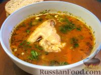

Самые лучшие рецепты
Мы собрали для вас самые вкусные и легкие для приготовления рецепты

Суп «Харчо»
Суп харчо, рецепт с курицей. Вкусный, ароматный, острый. Вообще-то это суп из говядины, но грузины довольно часто готовят суп харчо и из курицы.